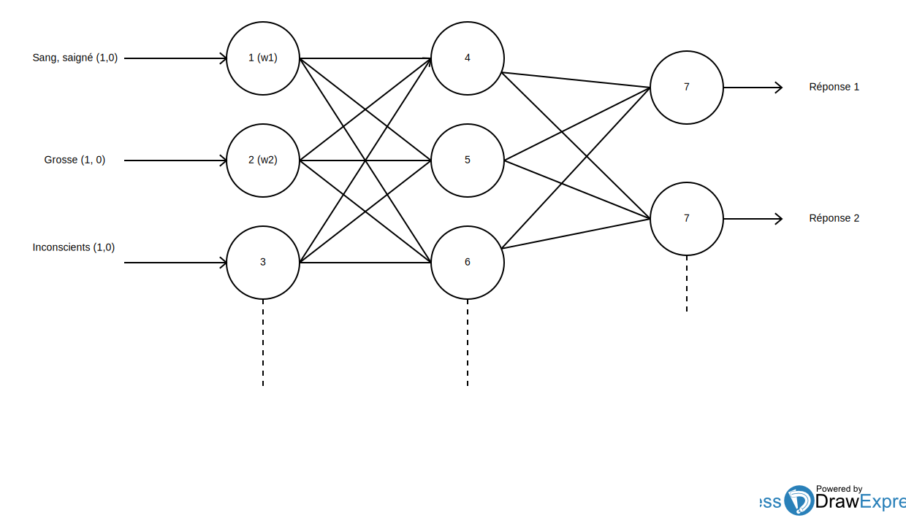

Notre robot a un but pédagogique dans le domaine des premiers secours. Il se présente sous la forme d'un chatbot dans lequel il est possible de poser des questions dans un langage naturel et d'obtenir une réponse détaillée de la procédure à suivre en fonction du cas. L'intervention de l'intelligence artificielle a pour but de permettre au robot d'apprendre automatiquement de nouveaux couples questions/réponses. Etant initialisé à partir d'un corpus questions/réponses simple, il ne permet pas d'obtenir un apprentissage suffisament précis. L'apprentissage supervisé étant sensible au corpus, il suffit de le construire en fonction du domaine d'activité.
Nous avons implémenté à l'aide d'une librairie (Synaptic) un perceptron multi-couche qui nous permet de classifier un ensemble de mots-clés correspondant à l'une des différentes réponses présentes dans le corpus. En voici une architecture typique :
Le nombre de neurones d'entrées correspond au nombre de mots-clés, le nombre de neurones de sortie au nombre de réponses possibles.
Ce type de modèle d'apprentissage devient de plus en plus facile à mettre en place, et il a prouvé son efficacité à résoudre des problèmes de sémantique complexes. Cependant sa précision dépend grandement de la qualité du corpus et de sa diversité.